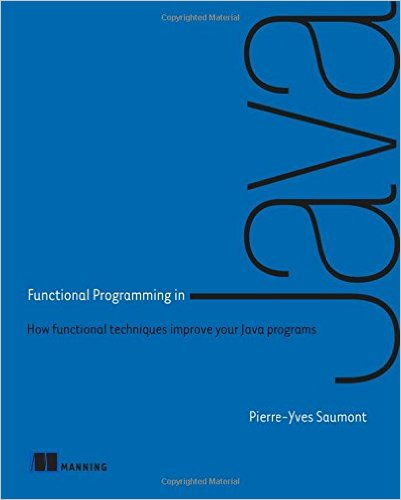

Functional Programming with Java and Vavr (Javaslang)
by: Ignacio Suay Mas
1. Introduction to Functional Programming
Functional Programming is not about lambdas
Introduction
In general terms, functional programming is a programming paradigm, and it's about programming with functions
...so how FP is different from other paradigms?
Functional programs contain no assignment statements , so variables, once given a value, never change. More generally, functional programs contain no side effects at all. A function call can have no effect other than to compute its result. This eliminates a major source of bugs, and also makes the order of execution irrelevant since no side effect can change an expression's value, it can be evaluated at any time.
This relieves the programmer of the burden of prescribing the flow of control. Since expressions can be evaluated at any time, one can freely replace variables by their values and viceversa - that is, programs are "referentially transparent". This freedom helps make functional programs more tractable mathematically than their conventional counterparts
John Hughes, "Why Functional Programming Matters"
Characteristics
- Variables once given a value, never change
- No side effects because a function can just compute the result
- Referentially transparent: The output will depend only in its input. One can freely replace the function by their output values
Characteristics
What does it mean that in FP there are no side effects?
- No mutation of variables
- No printing to the console or to any device
- No writing to files, databases, networks and so on
- No exception throwing

This is in theory, but if a program doesn't have an observable result, it won't be very useful.
The idea is that the interaction with the outside world won't occur in the middle of a computation, but only when you start or finish the computation.
Functional programming is sometimes considered a set of techniques:
- High-order functions
- Anonymous functions (lambda)
- Closures
- Currying
- Lazy evaluation
- Parametric polymorphism (generics)
- Algebraic data types(composite types)
Benefits
- Functional programs are deterministic. Because the result will depend just from the input are easier to understand
- Functional programs are easier to test because there are no side effects (no interaction with the outside world)
- Functional programs are more modular, because they are built from functions with just input and output
- Functional programs are inherently thread-safe because they avoid mutation of shared state
- Functional programming aims to let you more easily write programs that are concise, bug-free and parallelizable.
Question
Is this code functional?
public static int div(int a, int b) {
log.info("divide {} / {} ", a, b)
return a / b;
}
Functions
A method can be functional if it respects the requirements of a pure function:
- It must not mutate anything outside the function. No internal mutation may be visible from the outside.
- It must not mutate its argument.
- It must not throw errors or exceptions.
- It must always return a value.
- When called with the same argument, it must always return the same result.
Methods could be functional but you cannot pass a method as an argument, and you cannot compose methods without applying them
What about functions of several arguments?
How can we handle functions with multiple arguments?
There are 2 options to handle more than one argument:
- Curried functions
- Tuples
Curried functions
Currying is the fact of evaluating function arguments one by one, producing a new function with one argument less on each step.
Arguments can be applied one by one, each application of one argument returning a new function, except for the last one.
Let’s try to define a function for adding two integers.
Function<Integer, Function<Integer, Integer>> add = x -> y -> x + y;
add.apply(2).apply(3) //5

Partial application
Currying is very useful when arguments of a function must be evaluated in different places. Using currying, one may evaluate one argument in some component, then pass the result to another component to evaluate another argument, and so on until all arguments are evaluated.
Function<Double, Function<Double, Double>> addTax
= tax -> price -> price + (price * tax);
Function addTax18 = addTax.apply(0.18)
addtax18.apply(100)
addtax18.apply(50)
addtax18.apply(100)
How would you create a curried function of a sum of 3 Integers?
Functional Programming in Java 8
Java functional interface
Java provides an interface called Function<T,R>
T - the type of the input to the function
R - the type of the result of the function
And this interface declare 4 methods: R apply(T t), Function andThen(Function after), Function compose(Function before), Function identity()
Function<Integer,Integer> duplicate = x -> x * 2
duplicate.apply(3) // 6
Sorting a list in Java 7
Before Java 8 we could sort a collection implementing a new Collector
List persons = PersonFixture.persons();
Collections.sort(persons, new Comparator<Person>() {
@Override
public int compare(Person p1, Person p2) {
return p1.getAge() - p2.getAge();
}
});
But how do we do multiple sortings? for instance how do we sort persons by age and then by name?
Sorting a list in Java 8
In Java 8 we could lambda expressions instead of the new collector and also we can reverse and/or concatenate the sorting
persons.stream()
.sorted(comparing(Person::getAge))
.forEach(System.out::println);
persons.stream()
.sorted(comparing(Person::getAge).reversed())
.forEach(System.out::println);
persons.stream()
.sorted(comparing(Person::getAge).thenComparing(Person::getName))
.forEach(System.out::println);
Using Collector
We could add elements to a list using the following code:
List personOlderThan30 = new ArrayList<>();
persons().stream()
.filter(p -> p.getAge() > 30)
.forEach(personOlderThan30::add);
List personOlderThan30 = persons().stream()
.filter(p -> p.getAge() > 30)
.collect(Collectors.toList());
Both snippets will produce the same result, but we could run the second version in parallel!
Creating a custom collector
You can create a new collector by passing to the collect function 3 parameters:
- The new collection
- The function to add one element
- The function to join 2 collections
List personOlderThan30 = persons().stream()
.filter(p -> p.getAge() > 30)
.collect(ArrayList::new, ArrayList::add, ArrayList::addAll);
JSONArray personOlderThan30 = persons().stream()
.filter(p -> p.getAge() > 30)
.map(JSONObject::new)
.collect(JSONArray::new, JSONArray::put, JSONArray::put);
Using GroupingBy - Before Java 8
Before Java 8 in order to group a list of objects by one attribute you had to something similar to the following code:
Map<Integer, List<Person>> hashMap = new HashMap<>();
List<Person> persons = persons();
for(Person person : persons) {
if (!hashMap.containsKey(person.getAge())) {
List<Person> list = new ArrayList<>();
list.add(person);
hashMap.put(person.getAge(), list);
} else {
hashMap.get(person.getAge()).add(person);
}
}
Using GroupingBy in Java 8
Java 8 introduced a new collectio for grouping by an attribute
Also you can use mapping to just return a map of your object
Map<Integer, List<Person>> personOlderThan30 = persons().stream()
.filter(p -> p.getAge() > 30)
.collect(Collectors.groupingBy(Person::getAge));
// {50=[Person(age=50, name=Mary)],
// 31=[Person(age=31, name=Simon), Person(age=31, name=Matt)]}
Map<Integer, List<String>> personOlderThan30 = persons().stream()
.filter(p -> p.getAge() > 30)
.collect(Collectors.groupingBy(Person::getAge, mapping(Person::getName, toList())));
// {50=[Mary], 31=[Simon, Matt]}
Puzzle
public class Test{
public void main (String[] args) throws IOException {
Function<String, String> readLine = path ->
new BufferedReader(new FileReader(path)).readLine();
System.out.println(readLine.apply("log.txt"));
}
}
If the file log.txt exists, what is the result when you execute this program?
- The first line of the file is printed
- All the lines of the file are printed
- An IOException is thrown at runtime
- Compilation fails
Handling Exceptions
When we have to handle exceptions in FP we have different options:
One option is to wrap the code in a try and catch and handle the exception
Stream.of("/usr", "/tmp")
.map(path -> {
try (BufferedReader bufferedReader = new BufferedReader(new FileReader(new File(path)))){
return bufferedReader.readLine();
} catch (Exception e) {
return e.getMessage();
}
})
.forEach(System.out::println);
Exceptions
Another possible solution is to wrap the checked exception and throw a Runtime Exception
Stream.of("log.txt", "NoExist.txt")
.map(path -> {
try (BufferedReader bufferedReader = new BufferedReader(new FileReader(new File(path)))){
return bufferedReader.readLine();
} catch (Exception e) {
throw new IllegalArgumentException("File doesn't exist");
}
})
.forEach(System.out::println);
Vavr - Try
"Try": represents a computation that may either result in an exception, or return a successfully computed value. Instances of Try, are either an instance of Success or Failure. It is similar to @SneakyThrows in lombok.
Stream.of("log.txt", "NoExist.txt")
.map(path ->
Try.of(() -> new BufferedReader(new FileReader(path)).readLine())
.getOrElse(() -> "File doesn't exist"))
.forEach(System.out::println);
Stream.of("log.txt", "NoExist.txt")
.map(path ->
Try.of(() -> new BufferedReader(new FileReader(path)).readLine()))
.forEach(tryLine -> System.out.println(tryLine.get()));
Vavr - CheckedFunction
In vavr, if you need a function which throws a checked exception you can use CheckedFunction1, CheckedFunction2 and so on
CheckedFunction1 line = path ->
new BufferedReader(new FileReader(path)).readLine();
System.out.println(readLine.apply("fileDoesntExist.txt"));
Because the file doesn't exist the previous code will throw a java.io.FileNotFoundException at Runtime.
Vavr - Either
Either: Represents a value of two possible types.
By convention the right is the right value
Stream.of("log.txt", "NoExist.txt")
.map(this::eitherLineOrException)
.map(e->e.getOrElseGet(Throwable::getMessage))
.forEach(System.out::println);
private Either <Throwable, String> eitherLineOrException(String path) {
return Try.of(() ->
new BufferedReader(new FileReader(path)).readLine()).toEither();
}
Either vs Try vs CheckedFunction
Only if you are interested in processing the exception, and getting all the information from the exception you should use Either
If you are only interested in propagating the exception then use CheckedFunction and you have to define your own function (not in a map)
In most of the cases, specially if you are just interested in propagating the exception you should use Try. Also try allows you to recover from any error
Functional Programming using vavr (javaslang)
Vavr
Vavr is an object-functional language extension to Java 8, which aims to reduce the lines of code and increase code quality. It provides persistent collections, functional abstractions for error handling, concurrent programming, pattern matching and much more.
Vavr fuses the power of object-oriented programming with the elegance and robustness of functional programming. The most interesting part is a feature-rich, persistent collection library that smoothly integrates with Java's standard collections.
Because Vavr does not depend on any libraries (other than the JVM) you can easily add it as standalone .jar to your classpath.
vavr
Vavr provide a set of tools that makes it easier to use a functional approach by provinding:
- Immutable and persistent Collections
- Tuple
- λ Function
- Values
- Pattern Matching
Collections
In the current Java collections api methods like add, clear, remove aims us to mutate the list.
Vavr has desgined an all-new immutable and persistent collection library which meets the requirements of functional programming
A persistent data structure is a data structure that always preserves the previous version of itself when it is modified. Such data structures are effectively immutable, as their operations do not (visibly) update the structure in-place, but instead always yield a new updated structure.
Tuples
A Tuple combines a fixed number of elements together so that they can be passed around as a whole. Unlike an array or list, a tuple can hold objects with different types, but they are also immutable.
Vavr has a collection of Tuple1, Tuple2... Tuple8
Tuple2<Integer, String> tuple = Tuple.of(1, "a");
assert tuple._1 == 1;
assert tuple._2 == "a";
Tuple2<Integer, String> tuple2 = tuple.map(k -> k + 1, v -> v);
assert tuple2._1 == 2;
assert tuple2._2 == "a";
String apply = tuple.apply((k, v) -> k + v);
assert apply.equals("1a");
λ - Function
Java 8 just provides a Function which accepts one parameter and a BiFunction which accepts two parameters.
Vavr provides functions up to a limit of 8 parameters. The functional interfaces are of called Function0, Function1, Function2, Function3 and so on.
Function3 <Integer, Integer, Integer, Integer> sum3 =(x, y, z) -> x + y + z;
- Currying
- lifting
- Memoization
Functions - Currying
Remember: Currying is the fact of evaluating function arguments one by one, producing a new function with one argument less on each step.
Function2<Integer, Integer, Integer> sum = (x, y) -> x + y;
Function1<Integer, Function1<Integer, Integer>> sumCurried = sum.curried();
Function1<Integer, Integer> sum10 = sumCurried.apply(10);
assert sum10.apply(5) == 15;
Functions - Lifting
You can lift a partial function into a total function that returns an Option result
A partial function works properly only for some input values but not for all values
Function2<Integer, Integer, Integer> divide = (a, b) -> a / b;
Function2<Integer, Integer, Option<Integer>> safeDivide =
Function2.lift(divide);
assert Option.of(2).equals(safeDivide.apply(8, 4));
assert Option.none().equals(safeDivide.apply(8, 0));
Functions - Memoization
Memoization is a form of caching. A memoized function executes only once and then returns the result from a cache.
Function2<Integer, Integer, Integer> sum = (x, y) -> x + y;
Function2<Integer, Integer, Integer> sumMemoized = sum.memoized();
assert sumMemoized.apply(2).apply(3) == 5;
assert sumMemoized.apply(2).apply(3) == 5;
//Don't use it when you expect different values:
Function0<Double> randomMemoized= Function0.of(Math::random).memoized();
Double random1 = randomMemoized.apply();
Double random2 = randomMemoized.apply();
assert random1 == random2;
Values
Functional programming is all about values and transformation of values using functions
A value extends Iterable and it is immutable
- Option
- Try
- Either
- Lazy
- Future
- Validation
Values: Option vs Optional
Option implements Serializable and Iterable
Java8:
List<Optional<String>> optionalList = Arrays.asList(Optional.of("a"), Optional.empty(), Optional.of("c"));
List<String> listString = optionalList.stream()
.filter(Optional::isPresent)
.map(Optional::get)
.collect(Collectors.toList());
vavr:
List<Option<String>> optionList = List.of(Option.of("a"), Option.none(), Option.of("c"));
//["a"], [], ["c"]
List<String> listString = optionList.flatMap(x -> x);
//["a", "c"]
Values: Validation
The Validation control facilitates accumulating errors. Similar to Either, it will contain on the left side the Error and on the right side the value.
A valid value is contained in a Validation.Valid instance, a list of validation errors is contained in a Validation.Invalid instance.
public class PersonValidator {
public Validation<Seq<String>, Person> validatePerson(String name, int age) {
return Validation.combine(validateName(name), validateAge(age))
.ap(Person::new);
}
private Validation<String, String> validateName(String name) {
return StringUtils.isAlpha(name)
? Validation.valid(name)
: Validation.invalid("Name must contain only Unicode letters");
}
private Validation<String, Integer> validateAge(int age) {
return age < 0 || age > 150
? Validation.invalid("Age must be between 0 and 150")
: Validation.valid(age);
}
}
Values: Validation
@Test
public void testValidation(){
PersonValidator personValidator = new PersonValidator();
Validation<Seq<String>, Person> suay = personValidator.validatePerson("suay", 31);
assert suay.isValid();
Validation<Seq<String>, Person> suayInvalid = personValidator.validatePerson("suay-invalid", 31);
assert !suayInvalid.isValid();
assert suayInvalid.getError().apply(0).equals("Name must contain only Unicode letters");
Validation<Seq<String>, Person> suayInvalid2 = personValidator.validatePerson("suay-invalid", 160);
assert !suayInvalid.isValid();
assert suayInvalid2.getError().apply(0).equals("Name must contain only Unicode letters");
assert suayInvalid2.getError().apply(1).equals("Age must be between 0 and 150");
}
Pattern Matching
Vavr introduced a new match API that is close to Scala’s match. The basic syntax is close to Java’s switch. Pattern matching is a great feature that saves us from writing stacks of if-then-else branches. It reduces the amount of code while focusing on the relevant parts.
Option option = Option.of(1);
String optionResult = Match(option).of(
Case($Some($(1)), () -> "is 1"),
Case($Some($()), () -> "has a value but it is not 1"),
Case($None(), () -> "empty")
);
assert optionResult.equals("is 1");
Validation suay = personValidator.validatePerson("suay", -1);
String validationResult = Match(suay).of(
Case($Valid($()), "valid"),
Case($Invalid($(List.of("Age must be between 0 and 150"))), "invalid age"),
Case($Invalid($()), "any other error")
);
assert validationResult.equals("invalid age");
Resources: Books
Functional Programming in Java: Harnessing the power of java 8 lambda expressions, by: Venkat Subramaniam
 Functional Programming in Java: How functional techniques improve your Java programs, by: Pierre-Yves Saumont
Resources
videos:
Javaslang - Functional Java Done Right by Grzegorz Piwowarek: https://www.youtube.com/watch?v=gRJmpmYMHE0
A Pragmatist’s Guide to Functional Geekery by Michał Płachta: https://www.youtube.com/watch?v=3bkb6U5jJbs
Vavr documentation: http://www.vavr.io/vavr-docs/
Source code & Others
Please find all the code in this presentation in my github account:
https://github.com/ignacioSuay/Presentationsand you could find the presentation at: http://ignaciosuay.com/fp
Presentation realized with Reveal.js: The html presentation framework